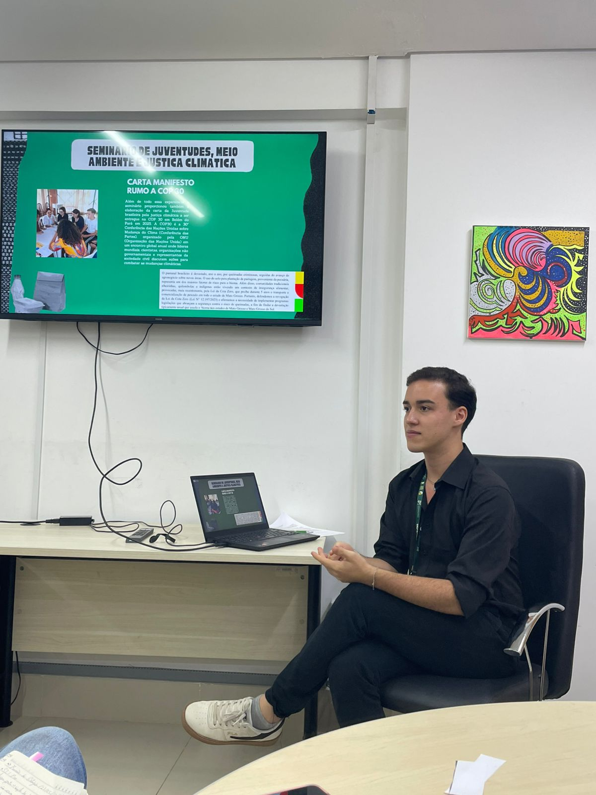
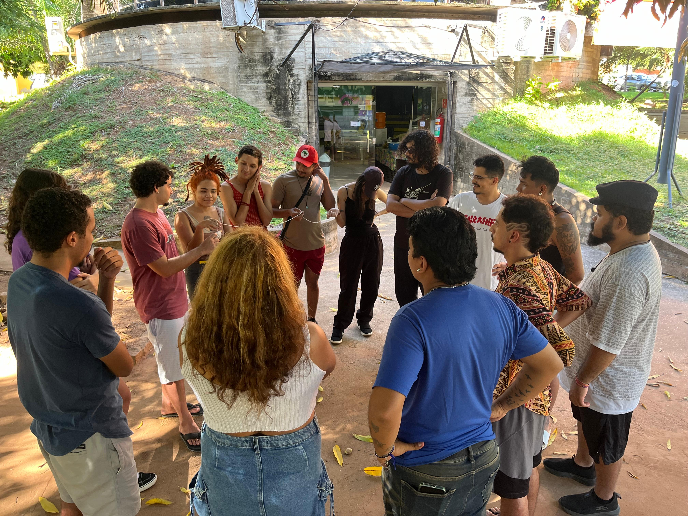
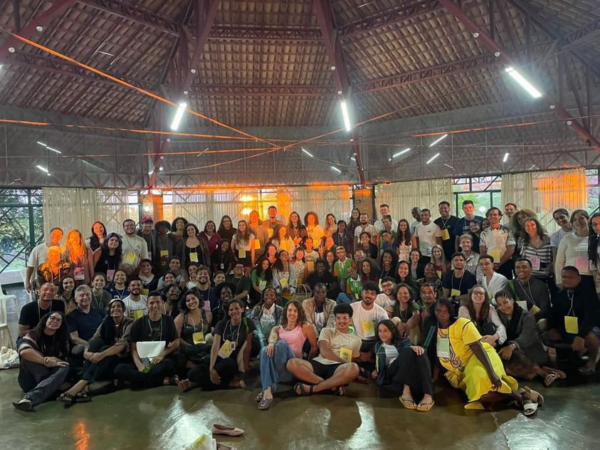
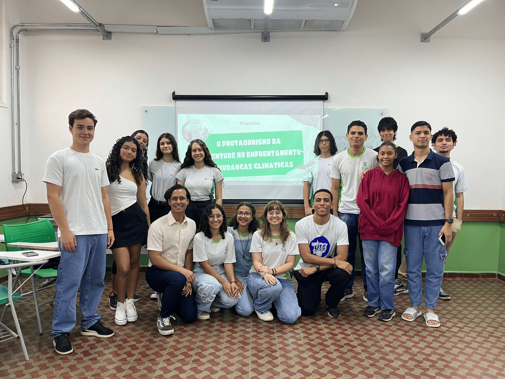
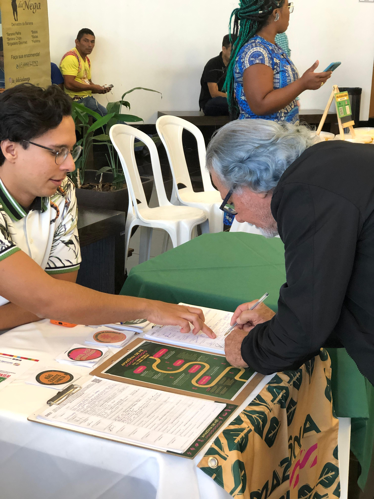
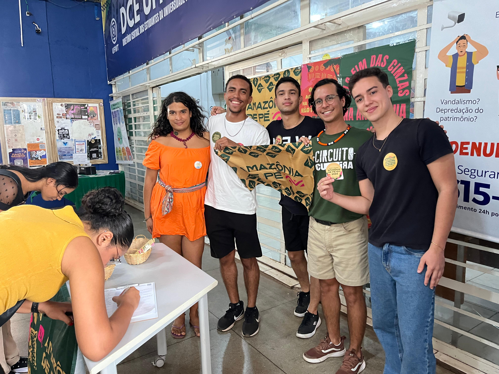

ATIVIDADE 04/2025 – OFICINA “DIREITOS LGBTQIAPN+ E CRISE AMBIENTAL: POR UMA AGENDA INCLUSIVA
NA
COP 30”
Tipo da Atividade: Formação
Data: 04 de junho de 2025
Horário: 09h às 11h
Local: Instituto de Ciências Humanas e Sociais (ICHS) – UFMT
📌 Descrição Geral
A oficina integrou a programação da Virada Sustentável 2025 e foi organizada pelo Coletivo
CapiClima,
com o objetivo de promover uma reflexão interseccional sobre a crise climática, articulando
as
pautas
de direitos LGBTQIAPN+ e justiça ambiental, visando uma agenda inclusiva para a COP 30.
🧩 Temas Debatidos
A oficina iniciou com a apresentação do Coletivo CapiClima e a importância da juventude
e
das populações
historicamente excluídas no debate climático. Em seguida, ocorreram palestras com
especialistas:
Maria Conceição – Interseccionalidade e Justiça Climática, Júlia Spigolon Xavier – Por
uma
Agenda Inclusiva
na COP 30 e Pedro Dias – Direitos Humanos e a Urgência Climática. A programação incluiu
a
dinâmica
“Mapa da Injustiça Social em Cuiabá”, com debates sobre interseccionalidade,
desigualdades
sociais e
estratégias de inclusão política.
📍 Resultados e Encaminhamentos
Identificação de problemas ambientais locais (falta de acesso à água, queimadas,
precarização da agricultura familiar).
Fortalecimento do diálogo entre sociedade civil, universidade e poder público.
Proposição de novas oficinas e articulação para garantir participação inclusiva na
COP
30.
📸 Galeria de Fotos
(Imagens ou galeria podem ser adicionadas aqui)

Imagem indisponível
')">
ATIVIDADE 03/2025 – OFICINA DE FORMAÇÃO PARA A EQUIPE INTERDISCIPLINAR DA DEFENSORIA PÚBLICA
DO
ESTADO DE MATO GROSSO
Tipo da Atividade: Formação
Data: 23 de maio de 2025
Horário: 14h
Local: Defensoria Pública do Estado de Mato Grosso
📌 Descrição Geral
A oficina teve como tema “Justiça Climática e Direitos Humanos: O papel da Defensoria
Pública
nas lutas por equidade ambiental”,
com o objetivo de aprofundar o debate sobre Justiça Climática e sua interface com os
direitos
humanos no contexto da atuação da Defensoria Pública.
🧩 Temas Debatidos
Durante a oficina, foi realizado um diálogo formativo sobre os desafios da promoção da
Justiça Climática na Defensoria Pública,
com reflexões sobre o papel institucional na garantia dos direitos fundamentais diante
da
crise climática. Houve também trocas
de experiências com profissionais da equipe interdisciplinar, fortalecendo a compreensão
sobre o tema e destacando a interseção
entre Justiça Social e Ambiental.
📍 Resultados e Encaminhamentos
Sensibilização da equipe sobre a importância de integrar a pauta socioambiental à
atuação jurídica e psicossocial.
Fortalecimento das parcerias entre Defensoria Pública e organizações da sociedade
civil.
Planejamento de novas formações e ações conjuntas voltadas à defesa dos grupos mais
vulneráveis.
📸 Galeria de Fotos
(Imagens ou galeria podem ser adicionadas aqui)

Imagem indisponível
')">
ATIVIDADE 02/2025 – RODA DE CONVERSA “JUVENTUDES MATO-GROSSENSES, MEIO AMBIENTE E JUSTIÇA
CLIMÁTICA”
Tipo da Atividade: Formação
Data: 21 de maio de 2025
Horário: 14h
Local: ADUFMAT - Cuiabá - MT
📌 Descrição Geral
A roda de conversa integrou a programação do LabNarra – Programa Amazônia de Pé, mediada por
Augusta Cesária, bolsista do programa e cofundadora do Coletivo CapiClima.
O objetivo foi criar um espaço de escuta e troca de experiências entre jovens
universitários,
promovendo reflexões sobre os desafios socioambientais na Amazônia
e o protagonismo juvenil como agente de transformação.
🧩 Temas Debatidos
Exibição do curta-metragem “Nossos Sonhos Pela Janela”, produzido pela equipe
independente
Bora Fazer Filmes, trazendo reflexões sobre ancestralidade,
desigualdades territoriais e resistência frente às emergências climáticas. O debate
abordou
pertencimento, juventude amazônida e justiça climática.
📍 Resultados e Encaminhamentos
Fortalecimento da identidade e do papel das juventudes como protagonistas na luta
climática.
Ampliação do diálogo sobre justiça climática, com perspectiva interseccional e
territorializada.
Estímulo à criação de espaços formativos e afetivos para articulação de ações
socioambientais.
📸 Galeria de Fotos
(Imagens ou galeria podem ser adicionadas aqui)
ATIVIDADE 01/2025 – INSTAGRAM COMO FERRAMENTA DE EDUCAÇÃO POPULAR
Tipo da Atividade: Mobilização
Data: Janeiro de 2025
📌 Descrição Geral
A ação utilizou as redes sociais como meio de mobilização e conscientização sobre temas de
justiça climática,
ampliando o alcance das discussões ambientais e aproximando o público jovem das pautas
socioambientais.
📸 Galeria de Fotos
(Imagens ou galeria podem ser adicionadas aqui)

Imagem indisponível
')">
ATIVIDADE 07/2024 – SEMINÁRIO NACIONAL DE JUVENTUDE, MEIO AMBIENTE E JUSTIÇA CLIMÁTICA
Tipo da Atividade: Formação
Data: 21 a 25 de novembro de 2024
Horário: Dia inteiro
Local: Brasília - DF
📌 Descrição Geral
Representar o bioma Pantanal no Seminário Nacional de Juventude, Meio Ambiente e Justiça
Climática, realizado pelo Ministério do Meio Ambiente e Mudança do Clima em Brasília, entre
21 e
25 de novembro de 2024, foi uma experiência transformadora e inesquecível para o Coletivo
CapiClima.
Essa participação marcou um divisor de águas na nossa trajetória. A partir das cinco missões
propostas pelo seminário, assumimos um compromisso coletivo: mobilizar juventudes, articular
estratégias e promover ações que fortaleçam a justiça climática, a preservação do Pantanal e
os
direitos socioambientais. Foi nesse espaço que consolidamos ainda mais nossa identidade como
coletivo e reafirmamos nossa luta.
🧩 Temas Debatidos
O seminário reuniu cerca de 80 jovens de todos os biomas brasileiros, além de
representantes
de países da Comunidade de Língua Portuguesa (Cabo Verde, Angola, Guiné-Bissau, São Tomé
e
Príncipe e Moçambique), promovendo um verdadeiro intercâmbio cultural e político.
Foram cinco dias intensos, repletos de oficinas, rodas de conversa, palestras e debates
sobre os desafios ambientais, o papel da juventude e a construção de soluções conjuntas
para
enfrentar a crise climática, através de Justiça Climática e Racismo Ambiental, Recursos
hídricos e direito à água, Participação social, governança e incidência política,
Conservação ambiental e inclusão socioprodutiva, Gestão ambiental urbana, Gestão
ambiental
rural e em territórios tradicionais, Equidade de gênero, Educação Ambiental e
Comunicação,
em que cada atividade reforçou a importância da participação social, da incidência
política
e da integração entre saberes científicos, culturais e ancestrais.
📍 Resultados e Encaminhamentos
A reconstrução do Plano Nacional de Juventude e Meio Ambiente, com eixos como
direitos
humanos, igualdade de gênero, combate ao racismo ambiental e incidência política.
A construção da 3a Jornada Nacional de Educação Ambiental, como parte da agenda do
MMA
para fortalecer práticas educativas diante da emergência climática.
A elaboração da Carta da Juventude Brasileira pela Justiça Climática, que será
apresentada na COP 30 em Belém do Pará (2025).
📸 Galeria de Fotos
(Imagens ou galeria podem ser adicionadas aqui)

Imagem indisponível
')">
ATIVIDADE 06/2024 – OFICINA “O PROTAGONISMO DA JUVENTUDE NO ENFRENTAMENTO ÀS MUDANÇAS
CLIMÁTICAS”
Tipo da Atividade: Formação
Data: 08 de novembro de 2024
Horário: 7h30 às 11h
Local: IFMT - Campus Cuiabá Cel. Octayde Jorge da Silva
📌 Descrição Geral
A oficina foi organizada pelo Coletivo CapiClima com o objetivo de promover o protagonismo
juvenil frente às questões ambientais, integrando ensino, pesquisa e extensão no âmbito dos
Objetivos do Desenvolvimento Sustentável (ODS) da Agenda 2030.
🧩 Temas Debatidos
Cerca de 20 estudantes participaram de uma dinâmica participativa que incentivou a
mobilização e o engajamento dos jovens em espaços de debate e atuação socioambiental.
Durante a oficina, foram discutidos temas relacionados ao papel da juventude no
enfrentamento das mudanças climáticas, ressaltando a importância da participação ativa
na
construção de soluções sustentáveis.
📍 Resultados e Encaminhamentos
Estímulo ao engajamento juvenil nas temáticas socioambientais.
Fortalecimento do diálogo entre ensino, pesquisa e extensão.
Proposição de continuidade das atividades formativas e mobilizadoras junto ao IFMT e
outros espaços educativos.
📸 Galeria de Fotos
(Imagens ou galeria podem ser adicionadas aqui)

Imagem indisponível
')">
ATIVIDADE 05/2024 – PARTICIPAÇÃO NO 1º SEMINÁRIO ESTADUAL DOS OBJETIVOS DO DESENVOLVIMENTO
SUSTENTÁVEL (ODS) DE MATO GROSSO
Tipo da Atividade: Formação
Data: 05 e 06 de junho de 2024
Horário: 10h30 às 14h
Local: Universidade Federal de Mato Grosso - UFMT
📌 Descrição Geral
O sarau artístico-cultural foi organizado pelo Coletivo CapiClima em parceria com o
Movimento
Amazônia de Pé, integrando a programação da Virada Cultural de Mato Grosso. O evento teve
como
objetivo valorizar a cultura e as expressões artísticas como instrumentos de mobilização
social
em defesa da Amazônia e dos direitos socioambientais.
🧩 Temas Debatidos
Durante o seminário, foram discutidos temas essenciais para o desenvolvimento
sustentável,
incluindo meio ambiente, sociedade e desenvolvimento sustentável; erradicação da
pobreza;
fome zero e agricultura sustentável; saúde e bem-estar; educação de qualidade; igualdade
de
gênero; e acesso à água e energia limpa.
O evento contou ainda com apresentações culturais que reforçaram a cultura cuiabana,
promovendo a integração entre arte, cultura e sustentabilidade. O Coletivo CapiClima
organizou uma banca de assinaturas para o Projeto de Lei Amazônia de Pé, fortalecendo a
campanha em defesa da preservação ambiental e dos direitos dos povos tradicionais. Além
disso, foi realizada uma moção de aplausos em homenagem ao membro do coletivo, Lucas, em
reconhecimento à sua destacada atuação e contribuição para as causas socioambientais.
📍 Resultados e Encaminhamentos
Fortalecimento do diálogo entre juventudes, movimentos sociais, poder público e
sociedade civil.
Ampliação da visibilidade dos Objetivos do Desenvolvimento Sustentável no contexto
local.
Continuidade da mobilização em torno do Projeto de Lei Amazônia de Pé.
Estímulo à participação ativa de jovens na construção de políticas públicas
sustentáveis.
📸 Galeria de Fotos
(Imagens ou galeria podem ser adicionadas aqui)

Imagem indisponível
')">
ATIVIDADE 04/2024 – SARAU “É TEMPO DE CAJU” – VIRADA CULTURAL DO MOVIMENTO AMAZÔNIA DE PÉ
Tipo da Atividade: Cultural
Data: 05 e 06 de junho de 2024
Horário: 10h30 às 14h
Local: Universidade Federal de Mato Grosso - UFMT
📌 Descrição Geral
O sarau artístico-cultural foi organizado pelo Coletivo CapiClima em parceria com o
Movimento
Amazônia de Pé, integrando a programação da Virada Cultural de Mato Grosso. O evento teve
como
objetivo valorizar a cultura e as expressões artísticas como instrumentos de mobilização
social
em defesa da Amazônia e dos direitos socioambientais.
🧩 Temas Debatidos
O Projeto Amazônia de Pé é uma iniciativa dedicada à proteção ambiental da Amazônia, à
valorização dos saberes e direitos dos povos tradicionais, e à promoção de políticas
públicas que combatam o desmatamento, a grilagem e outras ameaças à sustentabilidade
socioambiental da região. Durante o evento, realizou-se também um processo de educação
popular, com a coleta voluntária de assinaturas dos participantes para fortalecer a
campanha. Durante os dois dias do sarau, foram apresentadas diversas manifestações
artísticas, incluindo música, poesia, dança e performances culturais. Além disso, foram
coletadas mais de 200 assinaturas em apoio ao Projeto de Lei Amazônia de Pé,
contribuindo
para a visibilidade e fortalecimento da campanha em defesa da Amazônia e de suas
populações
tradicionais.
📍 Resultados e Encaminhamentos
Fortalecimento da articulação entre juventudes, movimentos sociais e coletivos
culturais.
Ampliação da visibilidade do Projeto de Lei Amazônia de Pé junto à comunidade
acadêmica
e à sociedade civil.
Planejamento de futuras ações culturais integradas às pautas socioambientais.
📸 Galeria de Fotos
(Imagens ou galeria podem ser adicionadas aqui)
ATIVIDADE 03/2024 – WEBINÁRIO “O PAPEL DA JUVENTUDE NA CONSTRUÇÃO DA JUSTIÇA CLIMÁTICA”
Tipo da Atividade: Formação
Data: 24 de outubro de 2024
Horário: 18h às 21h
Local: Plataforma virtual Google Meet
📌 Descrição Geral
O webinário foi promovido pelo Coletivo CapiClima com o objetivo de ampliar o debate sobre a
participação juvenil na agenda socioambiental, com ênfase na justiça climática. O evento
reuniu
cerca de 30 participantes, entre estudantes, pesquisadores, ativistas e membros de
organizações
sociais, promovendo um espaço plural para diálogo e troca de experiências.
🧩 Temas Debatidos
Durante o encontro, foram discutidos diversos temas centrais, incluindo o protagonismo
infantojuvenil nas lutas socioambientais, as relações entre meio ambiente,
sustentabilidade
e juventude, além da importância dos povos indígenas na construção de alternativas
justas e
sustentáveis. Houve destaque especial para a valorização dos povos tradicionais de
Cuiabá,
como as comunidades Warao e Bororo, e reflexões sobre estratégias para fortalecer o
engajamento dos jovens em políticas públicas e movimentos sociais vinculados à justiça
climática.
📍 Resultados e Encaminhamentos
Ampliação da rede de contatos e fortalecimento das parcerias entre jovens ativistas
e
coletivos
Incentivo à criação de novos espaços de debate e formação política sobre justiça
climática.
Planejamento de futuras ações conjuntas para garantir a visibilidade e a
participação
efetiva das juventudes nos processos decisórios locais e regionais.
📸 Galeria de Fotos
(Imagens ou galeria podem ser adicionadas aqui)
ATIVIDADE 02/2024 – AÇÃO EM DEFESA DAS ÁRVORES CENTENÁRIAS EM CHAPADA DOS GUIMARÃES
Tipo da Atividade: Mobilização
Data: 12 de julho de 2024
Horário: Dia inteiro
Local: Chapada dos Guimarães - MT
📌 Descrição Geral
A atividade foi promovida pelo Coletivo CapiClima como resposta à tentativa de corte de
árvores
centenárias na cidade de Chapada dos Guimarães, justificadas por autoridades locais como
parte
de um projeto de ampliação da feira dos agricultores. A ação teve como objetivo defender o
patrimônio ambiental e histórico da região, mobilizando a sociedade civil em torno da
preservação das árvores e da memória viva do cerrado mato-grossense.
🧩 Temas Debatidos
Realizada ao longo do dia, a atividade contou com a participação de moradores, ativistas
e
parceiros do coletivo, que se engajaram em ações de mobilização territorial,
visibilidade
pública e pressão política sobre os tomadores de decisão. Durante a mobilização, foram
gravados vídeos e depoimentos de moradores e ativistas, denunciando a ameaça ao
ecossistema
local. Houve também pressão direta sobre autoridades locais, por meio de publicações em
redes sociais, articulações com movimentos ambientais e solicitações formais de
suspensão do
corte das árvores. A ação ganhou repercussão significativa, alcançando o canal de
notícias
Olhar Direto, com mais de 200 mil seguidores, o que contribuiu para ampliar a
visibilidade
do caso e fortalecer a pressão por alternativas sustentáveis à proposta de intervenção
urbana.
📍 Resultados e Encaminhamentos
Ampliação do debate público sobre a importância das árvores urbanas como
infraestrutura
ecológica e cultural.
Proposição de diálogo com gestores públicos e representantes da feira, visando
alternativas à supressão das árvores.
Registro da ação como parte do histórico de incidência ambiental e territorial do
Coletivo CapiClima, fortalecendo as estratégias de mobilização comunitária em defesa
dos
territórios.
📸 Galeria de Fotos
(Imagens ou galeria podem ser adicionadas aqui)
ATIVIDADE 01/2024 – RODA DE CONVERSA “JUVENTUDES, MEIO AMBIENTE E JUSTIÇA CLIMÁTICA”
Tipo da Atividade: Formação
Data: 12 de junho de 2024
Horário: 9h30 às 11h30
Local: Universidade Federal de Mato Grosso - UFMT
📌 Descrição Geral
A roda de conversa foi promovida pelo Coletivo CapiClima, em parceria com a Virada
Sustentável
de Mato Grosso – Edição 2024, como parte da programação oficial do evento. A atividade teve
como
objetivo proporcionar um espaço de escuta, troca de experiências e reflexão crítica sobre os
impactos das mudanças climáticas nas juventudes.
Reunindo cerca de 15 estudantes de diversos cursos da UFMT, o encontro foi conduzido de
forma
horizontal, incentivando o compartilhamento de vivências pessoais e coletivas diante das
emergências climáticas e fortalecendo o engajamento estudantil com a pauta da justiça
socioambiental.
🧩 Temas Debatidos
Durante a atividade, os participantes compartilharam como as mudanças climáticas têm
impactado suas rotinas, saúde mental e vínculos comunitários, gerando angústia e
incertezas,
especialmente entre jovens de territórios periféricos. A insegurança alimentar, com
aumento
dos preços e dificuldade de acesso a alimentos saudáveis, foi destacada como uma das
consequências mais graves, afetando principalmente as periferias urbanas. O calor
extremo,
agravado pela falta de infraestrutura adequada, também compromete o bem-estar e o
desempenho
acadêmico. Além disso, foi ressaltada a falta de espaços de diálogo sobre justiça
climática
que incluam o protagonismo das juventudes negras, indígenas, LGBTQIAPN+ e de áreas
historicamente negligenciadas, reforçando a necessidade de ampliar espaços
institucionais e
populares para participação política e debate ambiental.
📍 Resultados e Encaminhamentos
Realização de novas rodas de conversa em bairros periféricos de Cuiabá.
Levantamento de pautas locais para elaboração de um plano de ação juvenil sobre
justiça
climática
Integração dos participantes às próximas atividades do coletivo, fortalecendo a rede
de
mobilização estudantil.